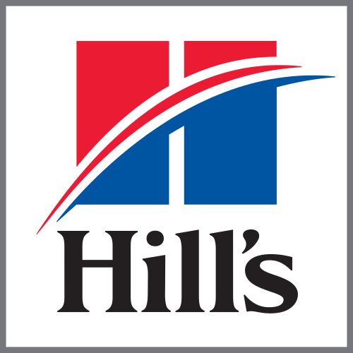

The Last 13 Years
Currently leading design system engineering at Hill's where I:
↪ Own and launched the technical side of a new design system: architecture, devops, packages, dev environment, component library, UI framework, Storybook
↪ Contribute 8 years of design system expertise to the strategy and management of the design system
↪ Lead cross-functional collaboration with design, product, devops, external and global teams
I was at Aon for over 5 years. Here are some highlights:
↪ I planned and executed a re-design of the US assessment platform to mobile first with theme-ing. Which reduced the branding process from 3 months to 3 days. From a team of developers to one person changing tokens. From endless back and forth with multiple parties to visual validation criteria improving business, design, and QA collaborations.
↪ Wrote a UI Framework for a total re-design of the complex b2b2c enterprise assessment platform which included: a CMS, theme-ing, accessibility and localization.
↪ Created a design system including a component library and my UI Framework.
↪ Managed a team to build out candidate reports: roadmap, planning, etc with 100% delivery on time for that year.
↪ Managed growth of the design system on three simultaneous projects: candidate reports, a new ESG platform, and a report engine for Aon globally.
Created style guide for use and re-use on Beacon's expanding B2B finance platform as well as the client facing website, which I also prototyped and built.

I was at Barclays for over 4 years so to briefly summarize:
↪ Primarily I was responsible for re-branding Barcalys Live following the acquisition of Lehman Live.
↪ The branding guidelines had only been created for print, so I converted and augmented those into a digital suite for use across Barclays Live (e.g. navigation, tabs, links, pagination, buttons and their states).
↪ Out of that, I created the Barclays Live/Research style guide and new concepts such as analyst featured quotes, and analyst and company pages.
↪ My homepage design was selected to go live and that design, among others has lasted 10 years and is put forward in the promotional material by Barclays to this day, which is why I am able to share it with you.
{kind=link}
From 2015-2017 I was an Adunct Professor at FIT in their web design and development continuing education program for which I taught and designed my own curriculum on Dreamweaver, UI and UX.

Earlier work: My earlier work includes brief agency work converting design into code on Motts.com. And design, ideation and development for my own clients: fashion designer, Shauntele; artist, Lucy Davis Phillips; newsletter, The Local Art Rag; Clear Health Costs; and my own word press blog, For the Love of the East End.